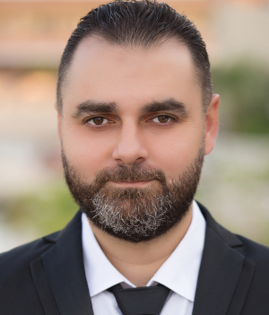

Salam Aljehni
Software Engineer && Full Stack Web Developer.
Precisely executes development projects from concept to delivery. Highly skilled software development professional bringing more than 10 years in software design,development and integration.
Contact me @: salamj@gmail.com
Tech stack
PHP, JavaScript, HTML, CSS, SVG
PHP Security, OOP Design and Design Pattern
Laravel
VueJS, Bootstrap, Tailwind
MySQL
Work History
Back & Front End Programmer | eOscars .Co
05/2008 - 08/2010
Create websites and frameworks for eOscars company.
- Create CMS for articles management.
- Create many websites like bookstore, personal blog, buy-sell website... and so on.
Back-End Developer && Server Manager| Enter2Shop Co (Kuwait City, Remote).
03/2011 - 10/2019
Create, Modify websites and manage web hosting servers.
- Researched, designed and implemented scalable applications for information dentification, extraction, analysis, retrieval and indexing.
- Work with opensource CMSs,
Modified and secure existing software to correct bugs, upgrade interfaces and improve performance.
- Manage Linux server and Amazon Cloud hosting.
Web Development Teacher | Shamra Search Engine & Online
11/2019 - Now
I teached students web development from start to good level including HTML,CSS,Java Script (es6), jQuery, Vuejs, PHP, Mysql, OOP Concepts, Laravel Framework and security.
Full Stack Web Development | Freelancer (Remote)
07-2021 - Now
Create full website from scratch using my own framework (PHP based) OR Laravel as back-end, with (HTML, CSS, Javascript,Tailwind, Vue,...) as front-end, using RESTful API
Recent Projects & Accomplishments
üèÜ Create
UGRPM library and publish to Github.
üèÜ Build this website using PHP, RESTful API, VueJS from scratch.
üèÜ Create Javascript library as example to demonestrate the experience(old work (native js before using es6)).
Available as opensource here
jCircle